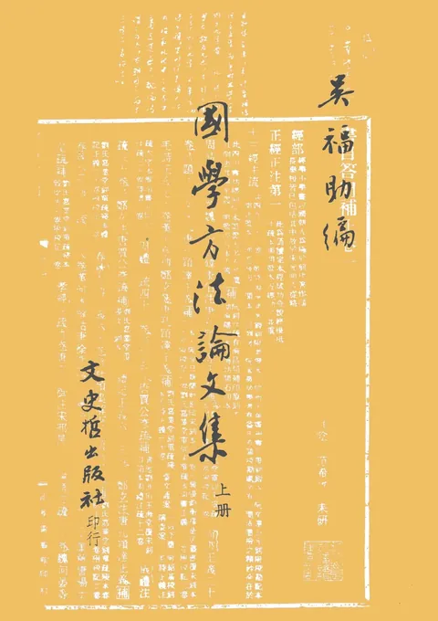

📚 文史哲出版社｜書系典藏
全館書系總覽
全館總目錄
返回首頁
〈國學〉
本系列共收錄
9
冊專業學術典籍
🔍 在主站開啟此書系篩選
原抄本日知錄 （鉛印標點本）
顧炎武著 · 68年 精一
NT$ 0
說苑疏證
趙善詒疏證 · 75年 精一
NT$ 800
國學略說
章太炎著 · 76年 平一
NT$ 300

國學方法論文集
吳福助編 · 73年 平二
NT$ 980
國學方法論文集(精)
吳福助編 · 73年 精一
NT$ 900
國學備纂(套書30本)
清.吳熲炎編 · 78年 精三十
NT$ 28000
治學的基本方法
張肇祺著 · 82年 平一
NT$ 260
國學常識
范耕研著 · 99年 平一
NT$ 180
來自糖的故鄉
陳維德著 · 96年 平一
NT$ 360